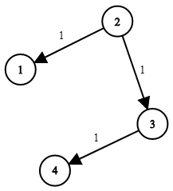

743. 网络延迟时间
题目与约束
有 n 个网络节点，标记为 1 到 n。
给你一个列表 times，表示信号经过 有向 边的传递时间。 times[i] = (ui, vi, wi)，其中 ui 是源节点，vi 是目标节点， wi 是一个信号从源节点传递到目标节点的时间。
现在，从某个节点 K 发出一个信号。需要多久才能使所有节点都收到信号？如果不能使所有节点收到信号，返回 -1 。
示例 1：

输入：times = [[2,1,1],[2,3,1],[3,4,1]], n = 4, k = 2
输出：2
示例 2：
输入：times = [[1,2,1]], n = 2, k = 1
输出：1
示例 3：
输入：times = [[1,2,1]], n = 2, k = 2
输出：-1
提示：
-
1 <= k <= n <= 100 -
1 <= times.length <= 6000 -
times[i].length == 3 -
1 <= ui, vi <= n -
ui != vi -
0 <= wi <= 100 -
所有
(ui, vi)对都 互不相同（即，不含重复边）
核心不变量
边权全部非负，Dijkstra 每次从堆中弹出的节点，其距离一定已经是最短距离；信号到达所有节点的耗时，就是这些最短距离里的最大值。
完整推导
思路推导
-
直觉与痛点（这题到底在问什么？） 从起点
k同时向四面八方播发信号，信号沿着有向边传播。要让「所有节点都收到信号」，就必须等最后那个节点收到，因此答案 = 起点到其余每个节点的最短路中的最大值。只要有一个节点从k根本走不到，就返回-1。 这本质上是一道「单源最短路径」题，而不是普通 BFS——因为边上有不同的耗时（权值），先到的不一定是最短的。 -
破局思路（Dijkstra 走起） - 先按
times建邻接表：graph[u]里存(v, w)。 - 用dist数组记录源点到各点的当前最短距离，初始化dist[k] = 0，其余为无穷大。 - 用小顶堆按距离从小到大取节点，每次取出距离最小的未定节点u，用它松弛所有出边：若dist[u] + w < dist[v]，就更新dist[v]并把v压入堆。 -
关键追问（为什么可以安心「弹出即最短」？） 因为所有
wi >= 0。当堆顶弹出u时，堆里其余节点的距离都不小于dist[u]，任何绕路都不可能让u更短，所以dist[u]就被锁定了。若存在负权边，这条性质失效，就得换成 Bellman-Ford / SPFA。
小例子：times = [[2,1,1],[2,3,1],[3,4,1]], k = 2。从 2 出发，dist[1]=1, dist[3]=1，再由 3 松弛出 dist[4]=2，最大值 2，即答案。
- 收尾（统计答案）
遍历
1..n的dist，若仍有INF说明不可达，返回-1；否则取最大值返回。
Java 实现（Dijkstra + 优先队列）
import java.util.ArrayList;
import java.util.Arrays;
import java.util.List;
import java.util.PriorityQueue;
class Solution {
public int networkDelayTime(int[][] times, int n, int k) {
// 1. 建邻接表，节点编号 1..n
List<int[]>[] graph = new List[n + 1];
for (int i = 1; i <= n; i++) {
graph[i] = new ArrayList<>();
}
for (int[] t : times) {
graph[t[0]].add(new int[]{t[1], t[2]}); // {目标节点, 权值}
}
// 2. dist 数组，初始为无穷大
int[] dist = new int[n + 1];
Arrays.fill(dist, Integer.MAX_VALUE);
dist[k] = 0;
// 3. 小顶堆，按距离升序，元素为 {节点, 距离}
PriorityQueue<int[]> pq = new PriorityQueue<>((a, b) -> a[1] - b[1]);
pq.offer(new int[]{k, 0});
while (!pq.isEmpty()) {
int[] cur = pq.poll();
int u = cur[0], d = cur[1];
// 过期条目直接跳过（惰性删除）
if (d > dist[u]) {
continue;
}
// 4. 松弛所有出边
for (int[] e : graph[u]) {
int v = e[0], w = e[1];
if (d + w < dist[v]) {
dist[v] = d + w;
pq.offer(new int[]{v, dist[v]});
}
}
}
// 5. 取所有最短距离的最大值；有不可达节点则返回 -1
int ans = 0;
for (int i = 1; i <= n; i++) {
if (dist[i] == Integer.MAX_VALUE) {
return -1;
}
ans = Math.max(ans, dist[i]);
}
return ans;
}
}
C++ 实现
#include <vector>
#include <queue>
#include <climits>
using namespace std;
class Solution {
public:
int networkDelayTime(vector<vector<int>>& times, int n, int k) {
// 邻接表：graph[u] = { {v, w}, ... }
vector<vector<pair<int, int>>> graph(n + 1);
for (auto& t : times) {
graph[t[0]].push_back({t[1], t[2]});
}
vector<int> dist(n + 1, INT_MAX);
dist[k] = 0;
// 小顶堆，存 {距离, 节点}
priority_queue<pair<int, int>, vector<pair<int, int>>, greater<pair<int, int>>> pq;
pq.push({0, k});
while (!pq.empty()) {
auto [d, u] = pq.top();
pq.pop();
if (d > dist[u]) continue; // 过期条目
for (auto& [v, w] : graph[u]) {
if (d + w < dist[v]) {
dist[v] = d + w;
pq.push({dist[v], v});
}
}
}
int ans = 0;
for (int i = 1; i <= n; i++) {
if (dist[i] == INT_MAX) return -1;
ans = max(ans, dist[i]);
}
return ans;
}
};
Python 实现
import heapq
class Solution:
def networkDelayTime(self, times: list[list[int]], n: int, k: int) -> int:
# 邻接表
graph = [[] for _ in range(n + 1)]
for u, v, w in times:
graph[u].append((v, w))
INF = float('inf')
dist = [INF] * (n + 1)
dist[k] = 0
# 小顶堆：(距离, 节点)
pq = [(0, k)]
while pq:
d, u = heapq.heappop(pq)
if d > dist[u]: # 过期条目
continue
for v, w in graph[u]:
if d + w < dist[v]:
dist[v] = d + w
heapq.heappush(pq, (dist[v], v))
ans = 0
for i in range(1, n + 1):
if dist[i] == INF:
return -1
ans = max(ans, dist[i])
return ans
复杂度
- 时间：
O(E log V)，其中E = times.length、V = n。每条边最多触发一次入堆，堆操作是O(log V)。 - 空间：
O(V + E)。邻接表存E条边，dist与堆各占O(V)级别。
- 节点编号从 1 开始：数组要开
n + 1，统计答案时从1遍历到n，别漏掉或多算下标 0。 - 不可达判定：必须显式检查
dist[i] == INF，不能直接取最大值，否则无穷大参与比较会出错。 - 惰性删除：堆里可能残留旧的距离条目，弹出时用
if (d > dist[u]) continue;跳过，避免用过期距离松弛。 - 为什么不用普通 BFS：边权不同，普通 BFS 只能处理「每步代价相等」的情形；带权最短路必须用 Dijkstra。
- 扩展：若出现负权边应改用 Bellman-Ford（
O(VE)）或 SPFA；若只求单点到单点可加「弹出目标即返回」的剪枝。